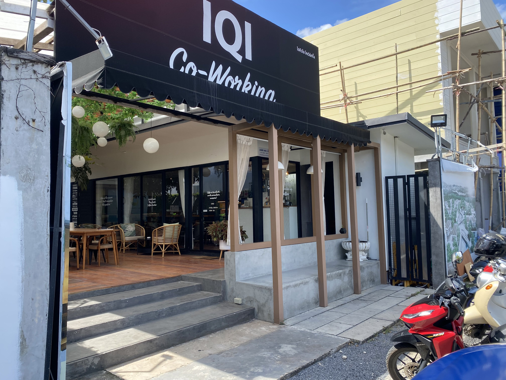

How we build a life in Phuket as a remote working family
I'm a remote freelancer, and launch random products from time to time.
My spouse works on building her education business.
Our 18 month old goes half days to a local international kindergarten, and stays with the nanny the other half.
Our second one will be born in a Phuket hospital 3 month from now.
We're building a life as a fully remote family. One step at a time.
The Good
Sunshine And Beach
A beach is a fantastic playground for a toddler.
The weather is nice all year round. Between 25 and 35 degrees, with a minimum humidity of 70%.
Renting a House
We rent a house in a gated community. It costs 43,000 thb per month (... usd). Prices seem to be rising due to a high influx of foreigners. The house and the gated community are nice. We are surrounded by a mix of western and Thai people, mostly families.
There are multiple coworkings
Most coworkings are on the south of the island. There's only a small one in the north, and it will be closed soon. Homa, a real estate developer, will open a combined housing and co-working project in January 2024 in the north.
Full-time nannies are affordable
Having a nanny is such a luxury I'm afraid to leave Asia before the kids are old enough to be alone in the house. It was more challenging to find a nanny here compared to Bangkok, where supply outstrips demand because of mostly Burmese nannies. But after a couple of Facebook posts we finally found a good one.
The Air
This was the main reason to move away from Bangkok. Bangkok and mainland Thailand suffers from burning season roughly between January and April. Phuket gets some of that, but significantly less.
The air here is way cleaner I get sunburned way easily, even in non-burning season.
Healthcare
Our first baby was born in Bumrungrad Bangkok. Probably the nicest hospital I've ever seen. It could be a 5 star hotel.
Phuket hospitals aren't up to that standard, but Bumrungrad is building a hospital here now as well, due to open in ...
Our second baby will be born in Bangkok Hospital Phuket. The service is great but the hospital itself looks a little worn out.